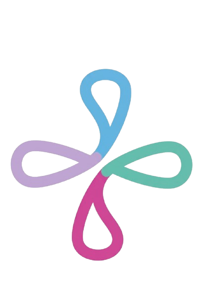

From Data to Decisions: Improving Clinical Insight Through Pediatric care
Anthony Martin
Medical researcher
(Outcome Assessment +3)
- MeSH terms:
- Outcome Assessment (Health Care)
- Data Interpretation
- Statistical

Welcome back Sam!
Projects, questions and colleagues selected based on your preferences
Anthony Martin
Medical researcher
Doctor
Neurology, Cognitive disorders
Rotterdam, Erasmus MC
Open question
Anna Hendriks
Medical intern
3 Comments
Webinar
28/01 Mar
Location: Online
Time: 16:00 - 17:00
Organiser: PyrK
Amara Chinedu Diallo
Paediatric nurse
"Patient health starts where good communication between colleagues begins."
Tami Nikolaus
Doctor
Neurology, Brain development
Utrecht, UMC